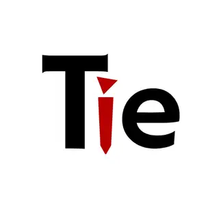

AI & ML
LLMs · RAG · agents · ViTs · forecasting · NLP
I'm Ansar — an AI/ML engineer working on the seam between AI-Agents, System Architecture, rapidly R&D ing new AI-driven workflows, and the kind of product thinking that makes sure the businesses actually run on. Currently a junior AI developer at Webdura Technologies, building marketing-AI products and agent assistants for traditional industries.
Who's behind the keyboard.
I finished my M.S. in Computer Science in May 2025 and have spent the time since pushing AI into the unglamorous places it actually has to work — marketing back-offices, content pipelines, the kind of traditional businesses that quietly print money but barely log a row.
Today I'm a junior AI developer at Webdura Technologies, building AI-backed marketing products and agent assistants that automate workflows for traditional industries — the kind of businesses where a minor shift in how work happens produces a major scalable outcome.
I sit close enough to product to spot real pain points before they hit a spec doc — and broad enough across industries (retail, recruitment, satellite, moderation) to know which ones are actually worth solving.
I care about models that survive the boring parts of production — latency budgets, drift, the request that arrives in a language you didn't plan for. The rest is decoration.
Roles, in reverse-chronological order.
Building AI-backed marketing products and AI agent assistants for traditional businesses — the ones that quietly print money — wiring automations that scale that quiet revenue faster and more productively.
↳ practice Introduced new working patterns — minor shifts in process, disproportionately large outcomes downstream.
↳ product Sit close to product ideation; map industry pain points to AI primitives early, before they hit a spec.
Rapid-prototyped AI workflows to compress idea-to- execution, with cloud-native components and intelligent authentication slotted in cleanly.
↳ focus Generative AI for recruitment across the Gulf & Middle East — workflows sculpted for scalability and high-performance global rollout.

Tienext CorporationOwned NLP infrastructure for sentiment + safety, deployed on AWS for production scale.
↳ key Multilingual hate-speech detection pipeline (Python · NLTK · real-time moderation).
Generalised computer-vision models for theft detection, smart traffic analysis, and satellite imagery.
↳ key Few-shot learning CV stack on Vision-Transformer backbones.
Led a team using AI-driven analytics to optimise content workflow and discovery.
↳ key Grew organic page impressions from 2.43K → 477K in a year.
What I reach for. Short list.
LLMs · RAG · agents · ViTs · forecasting · NLP
SQL · Pandas · Power BI · Streamlit · dashboards
AWS · Docker · GitHub Actions · Lambda · IAM
Python · Flask · REST · webhooks · token auth
Python · SQL · Java · HTML / CSS
Product thinking · Agile · cross-functional leadership
A short index of engagements where AI moved real numbers. Full write-ups on request.
Hate-speech & toxicity triage across languages — classifier ensemble with a rules layer, dockerised on AWS for real-time inference at queue volume.
A natural-language assistant for retail operators — Mistral-7B fronting a Flask query layer over warehouse SQL, deployed on AWS for low-latency answers without analyst hand-off.
Decision surface for store operators when seasonality lies — LSTM and regression baselines side-by-side, exposed through a Streamlit console with backtests built in.
Generalised CV pipeline for satellite and retail imagery — ViT backbone with a few-shot adapter so new domains onboard with tens, not tens of thousands, of labels.
I'm engaged full-time at Webdura, but I always make room for interesting collaborations, advisory chats, and product problems worth solving. The fastest path is email.